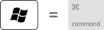

Apple 键盘和 Windows 键盘的功能键差别还是比较大的，下面列出的是日常开发中经常使用到的，其他的按键对照详见 通过 Boot Camp 在 Windows 中使用 Apple 键盘。
Windows 标志 = Command 键

Alt（左）：Option 键
Alt GR（右）：Option + Control 组合键
退格或删除：Delete 键
回车或 ⏎：Return 键
Mac 常用功能键字符对照
| 功能键 | 字符 |
|---|---|
| Command | ⌘ |
| Option | ⌥ |
| Control | ⌃ |
| Shift | ⇧ |
| Return/Enter | ⏎ |
| Delete | ⌫ |
参考